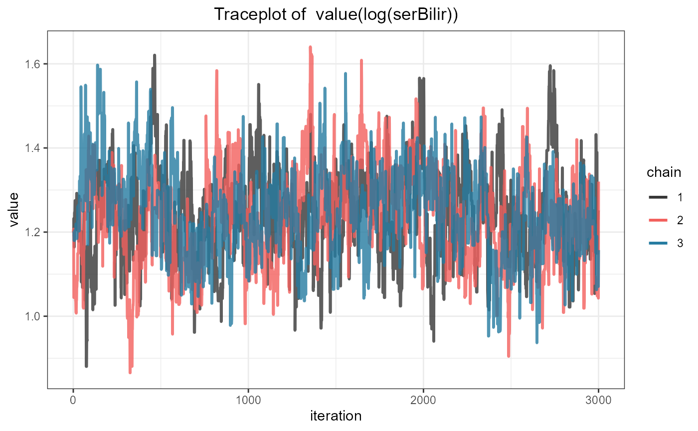

Univariate and Multivariate Joint Models
Dimitris Rizopoulos
2021-01-22
Source:vignettes/Joint_Models.Rmd
Joint_Models.RmdFitting Joint Models with JMbayes2
Univariate
The function that fits joint models in JMbayes2 is called jm(). It has three required arguments, Surv_object a Cox model fitted by coxph() or an Accelerated Failure time model fitted by survreg(), Mixed_objects a single or a list of mixed models fitted either by the lme() or mixed_model() functions, and time_var a character string indicating the name of the time variable in the specification of the mixed-effects models. We will illustrate the basic use of the package in the PBC dataset. We start by fitting a Cox model for the composite event transplantation or death, including sex as a baseline covariate:
pbc2.id$status2 <- as.numeric(pbc2.id$status != 'alive')
CoxFit <- coxph(Surv(years, status2) ~ sex, data = pbc2.id)Our aim is to assess the strength of the association between the risk of the composite event and the levels of serum bilirubin that has been collected during follow-up. We will describe the patient-specific profiles over time for this biomarker using a linear mixed model, with fixed-effects, time, sex, and their interaction, and as random effects random intercepts and random slopes. The syntax to fit this model with lme() is:
fm1 <- lme(log(serBilir) ~ year * sex, data = pbc2, random = ~ year | id)The joint model that links the survival and longitudinal submodels is fitted with the following call to the jm() function:
jointFit1 <- jm(CoxFit, fm1, time_var = "year")
summary(jointFit1)
#>
#> Call:
#> jm(Surv_object = CoxFit, Mixed_objects = fm1, time_var = "year")
#>
#> Data Descriptives:
#> Number of Groups: 312 Number of events: 169 (54.2%)
#> Number of Observations:
#> log(serBilir): 1945
#>
#> DIC WAIC LPML
#> marginal 4764.723 10268.33 -5122.661
#> conditional 5085.714 12300.59 -6879.701
#>
#> Random-effects covariance matrix:
#>
#> StdDev Corr
#> (Intr) 1.0102 (Intr)
#> year 0.1817 0.3684
#>
#> Survival Outcome:
#> Mean StDev 2.5% 97.5% P Rhat
#> sexfemale -0.0675 0.4202 -0.8606 0.7923 0.8491 1.0043
#> value(log(serBilir)) 1.2135 0.1086 1.0053 1.4261 0.0000 1.0165
#>
#> Longitudinal Outcome: log(serBilir) (family = gaussian, link = identity)
#> Mean StDev 2.5% 97.5% P Rhat
#> (Intercept) 0.7260 0.3107 0.1162 1.3330 0.0193 1.0029
#> year 0.2649 0.0995 0.0699 0.4651 0.0109 1.0031
#> sexfemale -0.2660 0.3245 -0.8943 0.3701 0.4027 1.0026
#> year:sexfemale -0.0886 0.1032 -0.2977 0.1129 0.3773 1.0026
#> sigma 0.4041 0.0228 0.3685 0.4566 0.0000 1.0480
#>
#> MCMC summary:
#> chains: 3
#> iterations per chain: 3500
#> burn-in per chain: 500
#> thinning: 1
#> time: 0.2 minThe output of the summary() method provides some descriptive statistics of the sample at hand, followed by some fit statistics based on the marginal (random effects are integrated out using the Laplace approximation) and conditional on the random effects log-likelihood functions, followed by the estimated variance-covariance matrix for the random effects, followed by the estimates for the survival submodel, followed by the estimates for the longitudinal submodel(s), and finally some information for the MCMC.
By default, jm() adds the subject-specific linear predictor of the mixed model as a time-varying covariate in the survival relative risk model. In the output this is named as value(log(serBilir)) to denote that, by default, the current value functional form is used. That is, we assume that the risk at a specific time \(t\) is associated with the value of the linear predictor of the longitudinal outcome at the same time point \(t\).
Standard MCMC diagnostics are available to evaluate convergence. For example, the traceplot for the association coefficient value(log(serBilir)) is produced with the following syntax:
ggtraceplot(jointFit1, "alphas")
and the density plot with the call:
ggdensityplot(jointFit1, "alphas")
Multivariate
To fit a joint model with multiple longitudinal outcomes, we simply provide a list of mixed models as the second argument of jm(). In the following example, we extend the joint model we fitted above by also including the prothrombin time and the log odds of the presence or not of ascites as time-varying covariates in the relative risk model for the composite event. Because this model is more complex, we increase the number of MCMC iterations, the number of burn-in iterations and the thinning per chain, using the corresponding control arguments:
fm2 <- lme(prothrombin ~ year * sex, data = pbc2, random = ~ year | id)
fm3 <- mixed_model(ascites ~ year + sex, data = pbc2,
random = ~ year | id, family = binomial())
jointFit2 <- jm(CoxFit, list(fm1, fm2, fm3), time_var = "year",
n_iter = 12000L, n_burnin = 2000L, n_thin = 5L)
summary(jointFit2)
#>
#> Call:
#> jm(Surv_object = CoxFit, Mixed_objects = list(fm1, fm2, fm3),
#> time_var = "year", n_iter = 12000L, n_burnin = 2000L, n_thin = 5L)
#>
#> Data Descriptives:
#> Number of Groups: 312 Number of events: 169 (54.2%)
#> Number of Observations:
#> log(serBilir): 1945
#> prothrombin: 1945
#> ascites: 1885
#>
#> DIC WAIC LPML
#> marginal 12061.31 17137.01 -9560.982
#> conditional 14794.32 18568.19 -11093.494
#>
#> Random-effects covariance matrix:
#>
#> StdDev Corr
#> (Intr) 0.9940 (Intr) year (Intr) year (Intr)
#> year 0.1886 0.4102
#> (Intr) 0.8120 0.5358 0.4408
#> year 0.3312 0.4042 0.3589 0.0148
#> (Intr) 3.7039 0.5165 0.4788 0.5312 0.2734
#> year 0.6346 0.4269 0.6290 0.2492 0.4262 -0.0402
#>
#> Survival Outcome:
#> Mean StDev 2.5% 97.5% P Rhat
#> sexfemale -0.5851 0.5209 -1.6206 0.4058 0.2473 1.0041
#> value(log(serBilir)) 0.6539 0.2028 0.2363 1.0378 0.0063 1.0148
#> value(prothrombin) 0.0766 0.1087 -0.1517 0.2723 0.4583 1.0566
#> value(ascites) 0.3720 0.1134 0.1806 0.6137 0.0000 1.0896
#>
#> Longitudinal Outcome: log(serBilir) (family = gaussian, link = identity)
#> Mean StDev 2.5% 97.5% P Rhat
#> (Intercept) 0.7004 0.2820 0.1413 1.2617 0.0140 1.0001
#> year 0.2700 0.0781 0.1190 0.4282 0.0003 1.0011
#> sexfemale -0.2403 0.2975 -0.8301 0.3428 0.4163 1.0000
#> year:sexfemale -0.0787 0.0803 -0.2399 0.0792 0.3117 1.0010
#> sigma 0.3920 0.0188 0.3626 0.4352 0.0000 1.0061
#>
#> Longitudinal Outcome: prothrombin (family = gaussian, link = identity)
#> Mean StDev 2.5% 97.5% P Rhat
#> (Intercept) 10.9397 0.4832 9.9845 11.8871 0.0000 1.0003
#> year 0.2494 0.1651 -0.0771 0.5711 0.1297 1.0006
#> sexfemale -0.3978 0.5072 -1.4142 0.6109 0.4227 1.0005
#> year:sexfemale 0.0504 0.1723 -0.2864 0.3922 0.7690 1.0021
#> sigma 1.0855 0.0273 1.0369 1.1458 0.0000 1.0001
#>
#> Longitudinal Outcome: ascites (family = binomial, link = logit)
#> Mean StDev 2.5% 97.5% P Rhat
#> (Intercept) -5.4875 1.3483 -8.3342 -3.0822 0.0000 1.0397
#> year 0.7541 0.2052 0.3769 1.1902 0.0000 1.0508
#> sexfemale -0.3939 1.1598 -2.6529 1.8826 0.7263 1.0070
#>
#> MCMC summary:
#> chains: 3
#> iterations per chain: 12000
#> burn-in per chain: 2000
#> thinning: 5
#> time: 1.7 minThe output for the survival submodel contains now the estimated coefficients for value(prothrombin) and value(ascites), and parameter estimates for all three longitudinal submodels.
Functional Forms
As mentioned above, the default call to jm() includes the subject-specific linear predictors of the mixed-effects models as time-varying covariates in the relative risk model. However, this is just one of the many possibilities we have to link the longitudinal and survival outcomes. The argument functional_forms of jm() provides more possibilities. Based on previous experience, two additional functional forms are provided, namely, the time-varying slope and the time-varying normalized area/cumulative-effect. The time-varying slope is the first order derivative of the subject-specific linear predictor of the mixed-effect model with respect to the follow-up time variable. The time-varying normalized area/cumulative-effect is the integral of the subject-specific linear predictor of the mixed-effect model from zero to the current follow-up time \(t\) divided by \(t\). The integral is the area under the subject-specific longitudinal profile; by dividing the integral by \(t\) we obtain the average of the subject-specific longitudinal profile over the corresponding period \((0, t)\).
To illustrate how the functional_forms argument can be used to specify these functional forms, we update the joint model jointFit2 by including the time-varying slope of log serum bilirubin instead of the value, and also the interaction of this slope with sex, and for prothrombin we include the normalized cumulative effect. For ascites, we keep the value functional form. The corresponding syntax to fit this model is:
fForms <- list(
"log(serBilir)" = ~ slope(log(serBilir)) + slope(log(serBilir)):sex,
"prothrombin" = ~ area(prothrombin)
)
jointFit3 <- update(jointFit2, functional_forms = fForms)
summary(jointFit3)
#>
#> Call:
#> jm(Surv_object = CoxFit, Mixed_objects = list(fm1, fm2, fm3),
#> time_var = "year", functional_forms = fForms, n_iter = 12000L,
#> n_burnin = 2000L, n_thin = 5L)
#>
#> Data Descriptives:
#> Number of Groups: 312 Number of events: 169 (54.2%)
#> Number of Observations:
#> log(serBilir): 1945
#> prothrombin: 1945
#> ascites: 1885
#>
#> DIC WAIC LPML
#> marginal 12084.78 15873.88 -9618.433
#> conditional 14787.01 18309.92 -11098.304
#>
#> Random-effects covariance matrix:
#>
#> StdDev Corr
#> (Intr) 0.9811 (Intr) year (Intr) year (Intr)
#> year 0.1912 0.4592
#> (Intr) 0.8119 0.5375 0.4566
#> year 0.3335 0.4234 0.3662 0.0214
#> (Intr) 3.7753 0.5315 0.4739 0.5243 0.2786
#> year 0.6975 0.4935 0.6576 0.2777 0.4277 -0.0149
#>
#> Survival Outcome:
#> Mean StDev 2.5% 97.5% P Rhat
#> sexfemale -0.9760 0.7387 -2.4079 0.4730 0.1983 1.0066
#> slope(log(serBilir)) 1.8476 1.3648 -1.0729 4.4117 0.1713 1.0206
#> slope(log(serBilir)):sexfemale 0.9261 1.4255 -1.9033 3.7028 0.5103 1.0216
#> area(prothrombin) 0.1721 0.2550 -0.3793 0.6300 0.4727 1.0263
#> value(ascites) 0.5290 0.1389 0.3190 0.8629 0.0000 1.0535
#>
#> Longitudinal Outcome: log(serBilir) (family = gaussian, link = identity)
#> Mean StDev 2.5% 97.5% P Rhat
#> (Intercept) 0.6901 0.2764 0.1457 1.2198 0.0143 0.9997
#> year 0.2712 0.0749 0.1256 0.4215 0.0003 1.0019
#> sexfemale -0.2320 0.2895 -0.7940 0.3446 0.4313 0.9996
#> year:sexfemale -0.0729 0.0773 -0.2238 0.0776 0.3380 1.0006
#> sigma 0.3910 0.0182 0.3622 0.4330 0.0000 1.0021
#>
#> Longitudinal Outcome: prothrombin (family = gaussian, link = identity)
#> Mean StDev 2.5% 97.5% P Rhat
#> (Intercept) 10.9329 0.4884 9.9851 11.8670 0.0000 1.0029
#> year 0.2525 0.1652 -0.0744 0.5878 0.1193 1.0029
#> sexfemale -0.3898 0.5152 -1.3864 0.6205 0.4440 1.0023
#> year:sexfemale 0.0510 0.1734 -0.2937 0.3943 0.7567 1.0014
#> sigma 1.0857 0.0281 1.0382 1.1470 0.0000 1.0017
#>
#> Longitudinal Outcome: ascites (family = binomial, link = logit)
#> Mean StDev 2.5% 97.5% P Rhat
#> (Intercept) -5.6066 1.3623 -8.3850 -3.1398 0.00 1.0228
#> year 0.8415 0.2166 0.4533 1.3155 0.00 1.0310
#> sexfemale -0.4225 1.1862 -2.8129 1.8769 0.72 1.0012
#>
#> MCMC summary:
#> chains: 3
#> iterations per chain: 12000
#> burn-in per chain: 2000
#> thinning: 5
#> time: 1.7 minAs seen above, the functional_forms argument is a named list with elements corresponding to the longitudinal outcomes. If a longitudinal outcome is not specified in this list, then the default, value functional form, is used for that outcome. Each element of the list should be a one-sided R formula in which the functions value(), slope() and area() can be used. Interaction terms between the functional forms and other (baseline) covariates are also allowed.
Penalized Coefficients using Shrinkage Priors
When multiple longitudinal outcomes are considered with possibly different functional forms per outcome, we require to fit a relative risk model containing several terms. Moreover, it is often of scientific interest to select which terms/functional-forms per longitudinal outcome are more strongly associated with the risk of the event of interest. To facilitate this selection, jm() provides the option to penalize the regression coefficients using shrinkage priors. As an example, we refit jointFit3 by assuming a Horseshoe prior for the alphas coefficients (i.e., the coefficients of the longitudinal outcomes in the relative risk model):
jointFit4 <- update(jointFit3, priors = list("penalty_alphas" = "horseshoe"))
cbind("un-penalized" = unlist(coef(jointFit3)),
"penalized" = unlist(coef(jointFit4)))
#> un-penalized penalized
#> gammas.Mean -0.9760490 -0.9400981
#> association.slope(log(serBilir)) 1.8476202 2.1550770
#> association.slope(log(serBilir)):sexfemale 0.9261080 0.7999129
#> association.area(prothrombin) 0.1720654 0.1456073
#> association.value(ascites) 0.5289875 0.5254702Apart from the Horseshoe prior, the ridge prior is also provided.